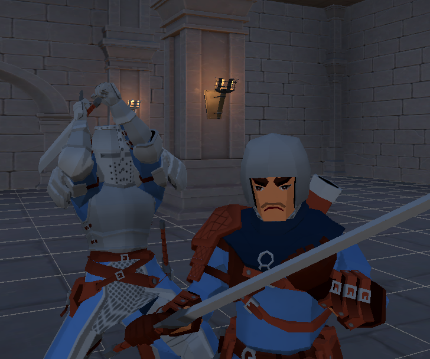

Taisteluprototyyppi, joka poikkeaa perinteisistä tappelupeleistä ja rakentuu vihollisen hyökkäysten reaaliaikaisen lukemisen ja niihin reagoimisen varaan. Hahmot eivät kuole — tavoitteena on saada etulyöntiasema tainnuttamalla vastustaja oikealla suunnanvalinnalla ja täydellisellä ajoituksella.
MABW on yritys rakentaa refleksipohjainen taistelujärjestelmä, joka palkitsee tarkkailusta ja ajoituksesta pelkän vahingonvaihdon sijaan. Vihollinen paljastaa hyökkäyksensä sitoutumalla satunnaisesti suuntaan ja valmistautumalla; pelaajan tehtävä on lukea tämä vihje ja reagoida ajoissa.
Oikean suunnan lukeminen oikealla hetkellä tainnuttaa vastustajan ja avaa rangaistusikkunan; väärä tai myöhäinen reaktio sen sijaan jättää pelaajan alttiiksi. Lopputuloksena on nopea, refleksipohjainen taistelusilmukka, joka palkitsee tarkkailusta ja ajoituksesta pelkän mekaanisen suorituksen sijaan.

Tämä projekti opetti minulle paljon tila-automaattien suunnittelusta, syötepohjaisten järjestelmien synkronoinnista ja refleksipohjaisen pelattavuuden vaatimasta ajoitustarkkuudesta. Hyökkäystilan siirtymien ja suuntavertailulogiikan rakentaminen alusta loppuun antoi minulle paljon vahvemman käsityksen tilanhallinnasta. Vihollisen hyökkäystä edeltävän "vihjeen" suunnittelu opetti minulle, että tekoälyn on tunnuttava sekä luettavalta että reilulta — liian aikainen signaali tekee siitä ennustettavan, liian myöhäinen tuntuu epäreilulta, ja minun piti löytää tämä hieno ajoitustasapaino. Tainnutus-/vahinkoratkaisulogiikan koodaaminen näytti myös, että paperilla yksinkertaiselta näyttävä sääntö (oikea suunta vs. väärä suunta) joutuu itse asiassa arvioimaan useita tiloja samanaikaisesti (suunta, ajoitus, tainnutustila) — kokemus, joka terävöitti tajuani reaktiivisten järjestelmien suunnittelusta.